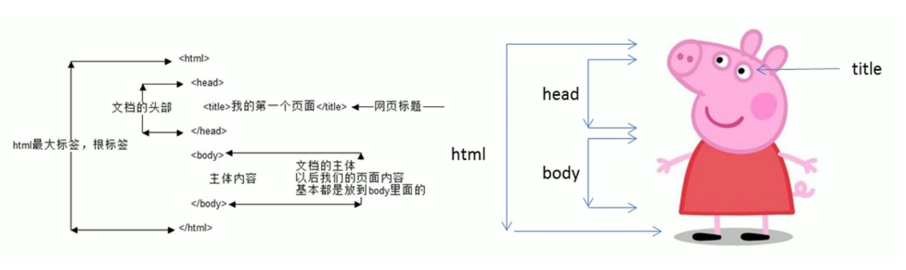

2 HTML初识
2.1 基本语法规范
2.2 基本结构标签
每个网页都会有一个基本的结构标签（也被称为骨架标签），页面内容也是在这些基本标签上书写。HTML页面也称为HTML文档。
HTML文档的后缀名必须是.htm或.html，浏览器的作用是读取HTML文档，并以网页形式显示他们。此时，用浏览器打开这个网页，我们就可以预览我们写的HTML文件了。
| 标题名 | 定义 | 说明 |
|---|---|---|
<html></html> |
HTML标签 | 页面中最大的标签,我们称为根标签 |
<head></head> |
文档头部 | 注意head标签中我们必须要设置的标签是tittle |
<title></title> |
文档标题 | 让页面拥有一个属于自己的网页标题 |
<body></body> |
文档主体 | 元素包含文档的所有内容，页面内容基本都是放到body里面 |

图2.1: HTML骨架标签